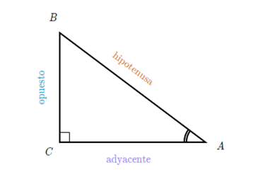
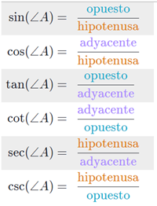
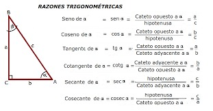
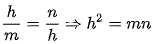
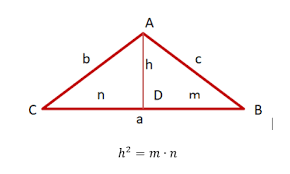
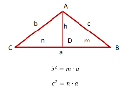
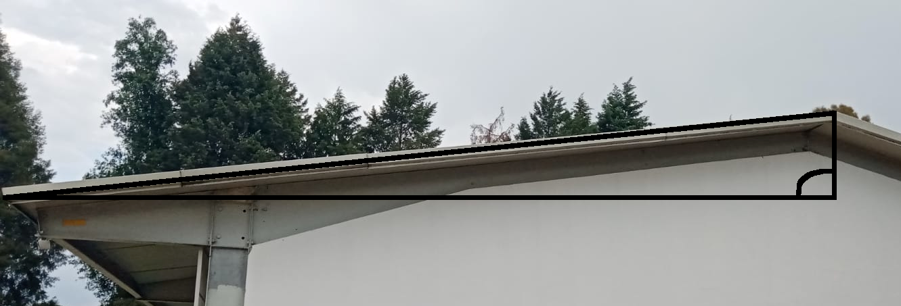
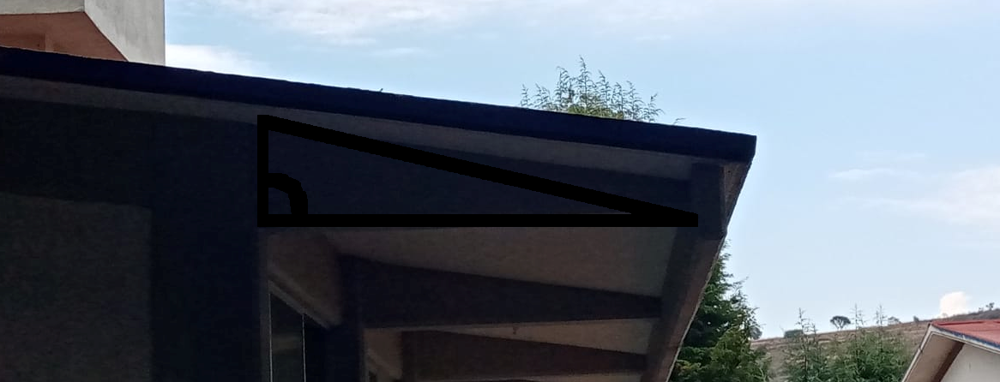
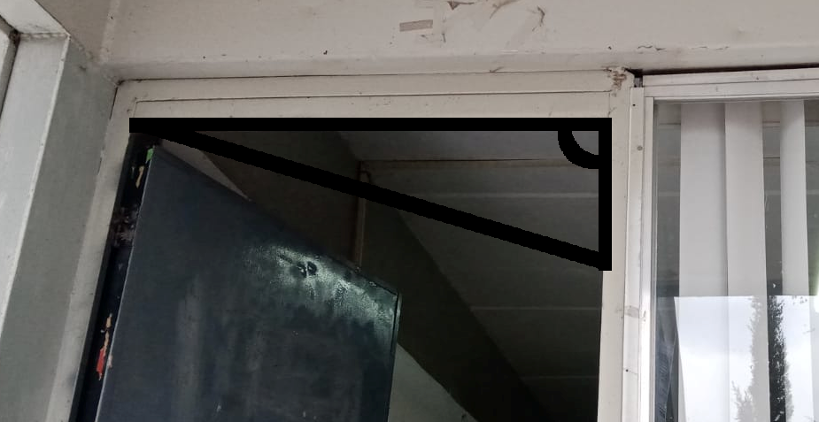
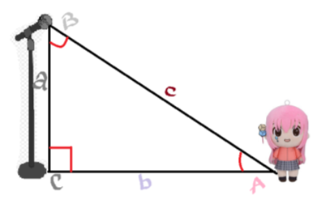

Relación entre ángulos y lados de un triángulo rectángulo
Todo triángulo rectángulo tiene exactamente dos ángulos agudos.
-
La hipotenusa es mayor que cualquiera de los catetos.
-
La hipotenusa es menor que la suma de los dos catetos.
En geometría, se llama triángulo rectángulo a todo triángulo que posee
un ángulo recto, es decir, un ángulo de 90 grados.1 Las razones entre las
longitudes de los lados de un triángulo rectángulo es un enfoque de la
trigonometría plana. En particular, en un triángulo rectángulo, se cumple
el llamado teorema de Pitágoras ya conocido por los babilonios.
Razones Trigonométricas:
Se le llaman Razones trigonométricas o Relaciones trigonométricas, a la
razón (cociente) existente entre los lados de un triángulo rectángulo.
Las seis relaciones trigonométricas para el Angulo θ se definen por:
- Seno (Sin)
- Coseno (Cos)
- Tangente (Tan)
- Secante (Sec)
- Cosecante (Csc)
- Cotangente (Cot)
 

Relaciones métricas:
Las relaciones métricas del triángulo rectángulo son cuatro, entre ellas,
3 triángulos formados trazan la altura relativamente a la hipotenusa son
rectángulos y semejantes.
La hipotenusa es igual a la suma de las proyecciones:
A = M + N
Por semejanza de triángulos, tenemos que:
-
El cuadrado de la altura relativa de los catetos.

-
El cuadrado de un cateto, es igual al producto entre su proyección
(que se encuentra de su lado) y la hipotenusa.
-
El producto entre la hipotenusa y la altura relativa a ella, es igual
al producto de los catetos.
(que se encuentra de su lado) y la hipotenusa.
al producto de los catetos.
Teorema de Pitágoras
En todo triángulo rectángulo se cumple que, la suma de los cuadrados de las
longitudes de sus catetos es igual al cuadrado de la longitud de su hipotenusa,
es decir, si los lados del triángulo son a, b y c, se cumple que a2 + b2 = c2.
Este resultado es conocido como el teorema de Pitágoras.

Teorema de altura
El teorema de la altura de un triángulo rectángulo o el teorema de la media
geométrica es el resultado de una propiedad geométrica elemental, que describe
la relación entre las longitudes en un triángulo rectángulo de la altura
perpendicular a la hipotenusa y de los dos segmentos en los que subdivide a la hipotenusa.

Teorema de cateto
El cuadrado de un cateto es igual al que produce de la hipotenusa por la
proyección de dicho cateto sobre la hipotenusa.
Como consecuencia tenemos las siguientes funciones:
- b2 = m*a
- c2 = n*a
Siendo a = m + n y m la proyección del cateto b sobra lo hipotenusa y n la del
cateto c, tal como se puedes observar en el triángulo. La medida proporcional
(o geométrica) de dos números de la raíz cuadrada a cada termino de las dos
expresiones, tenemos que los catetos son la medida proporcional de sus
proyecciones y la hipotenusa.
Estas formulas nos permiten calcular los catetos, o si bien calcular un cateto
conociendo su proyección y la hipotenusa.

Imagenes
  Explicación
